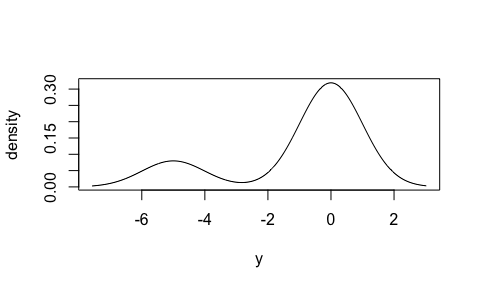
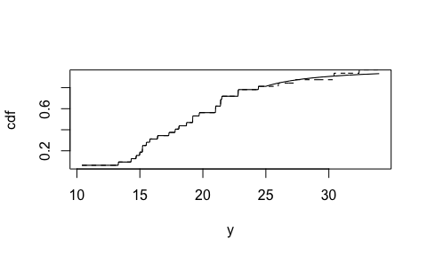

The purpose of distplyr is to equip every analyst with a tool to seemlessly draw powerful insights using distributions. Distributions add colour to your analysis. They show the complete picture of uncertainty.
Use distplyr to:
- Create and meld distributions using a wide pallet of base forms and tools.
- Draw properties from those distributions.
Many distributions in practice are built in “layers”, by transforming and combining other distributions. The result is a tailored distribution that does not follow a basic parametric form such as “Normal” or “Exponential”. The motivation behind the name of distplyr is that distributions are built by manipulation, akin to the package dplyr.
Note: This package is still in its infancy. There are many other critical features to come.
Design Choices
distplyr:
- Keeps all components of a distribution together in a single object.
- Computes only when needed, by dispatching an appropriate S3 method on call.
- Manages the discrete components of all distributions, often arising from empirical estimates.
Basic Usage
library(distplyr)There are many parametric families of distributions at your disposal. Here is a Uniform distribution:
(d1 <- dst_unif(2, 5))
#> Uniform Distribution
#>
#> Parameters:
#> parameter value
#> 1 min 2
#> 2 max 5
#>
#> Number of Discontinuities: 0Evaluate functional representations, such as the cdf and hazard function:
eval_cdf(d1, at = 3)
#> [1] 0.3333333
eval_hazard(d1, at = 3)
#> [1] 0.5Make a mixture distribution by combining some distributions:
(d2 <- mix(dst_norm(-5, 1), dst_norm(0, 1), probs = c(0.2, 0.8)))
#> Mixture Distribution
#>
#> Components:
#> distribution weight
#> 1 Gaussian 0.2
#> 2 Gaussian 0.8
#>
#> Number of Discontinuities: 0
plot(d2, n = 1001)
#> Warning in get_lower(cdf, level = at[1L]): This function doesn't work
#> properly yet!
#> Warning in get_higher(cdf, level = at[n_x]): This function doesn't work
#> properly yet!
#> Warning in get_lower(cdf, level = at[1L]): This function doesn't work
#> properly yet!
#> Warning in get_higher(cdf, level = at[n_x]): This function doesn't work
#> properly yet!
Make a graft distribution by replacing a distribution’s tail:
d3 <- stepdst(mpg, data = mtcars)
d4 <- graft_right(d3, dst_gpd(25, 5, 1), sep_y = 25)
plot(d4, "cdf", n = 1001, to = 34)
plot(d3, "cdf", n = 1001, lty = 2, add = TRUE)
Installation
distplyr is not on CRAN yet, so the best way to install it is:
devtools::install_github("vincenzocoia/distplyr")
distplyr in Context
Note that distplyr is not a modelling package, meaning it won’t optimize a distribution’s fit to data.
The distributions3 package is a similar package in that it bundles parametric distributions together using S3 objects, but does not handle step distributions.
The distr package allows you to make distributions including empirical ones, and transform them, using S4 classes.
Please note that the ‘distplyr’ project is released with a Contributor Code of Conduct. By contributing to this project, you agree to abide by its terms.